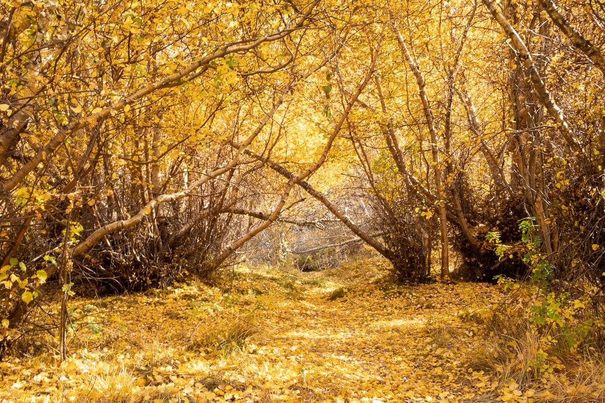
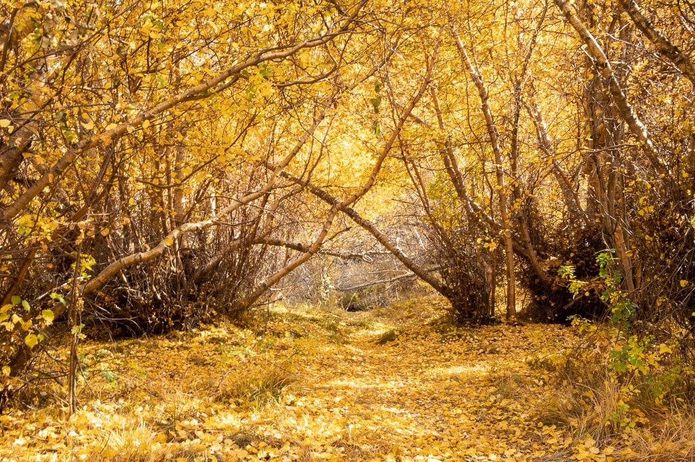

Nunc vulputate laoreet porta. Cras cursus est vel eros imperdiet, elementum sollicitudin metus facilisis. Maecenas in cursus nunc. Maecenas cursus ex eu velit luctus commodo. Nam iaculis urna faucibus metus facilisis suscipit. Aliquam mollis vehicula ultricies. Nunc suscipit enim felis, vel feugiat risus ullamcorper a. Nam dignissim eget magna vitae bibendum.
My name is Mía Astrid Islas Marquez and I’m a junior in Annenberg. I’m virtually attending classes from my hometown in San Diego, CA. My photos were taken in the space where I spend most of my time working, relaxing, and studying: my room. I decided to clone myself in this photo series both for fun and to represent a day in the life over time. I’ve always liked the look of long exposure photographs, but I was reminiscing on my days in the Annenberg Digital Lounge where I learned more about editing, and I decided to try my hand at trying to replicate that look digitally, like many things these days. My room is clearly decked out in SC gear, but amongst my many hobbies of roller skating, knitting, and doodling is creating a space where I can be comfortable both writing essays for hours on end and coming back home to relax after a long shift at work. I also have a lot of mirrors to help make 100 square feet feel bigger than it appears, so I used them to show parallels of my room, like my high school graduation cap and a behind the scenes peek at virtual band practice as a USC Silk.


My name is Lily, and I'm a PDP student in my 9th (and final) semester at USC, finishing my B.S. Industrial & Systems Engineering from Viterbi and M.S. Global Supply Chain Management from Marshall. I recently moved to Pasadena, CA which is about 20 minutes from the usc main campus after I started my full time work with Southern California Edison (SCE). I wanted to capture what life was like these days. A few shots used to capture just how many screens we are using when multitasking, especially for someone like me who is both working and in school and trying to maintain the resemblance of a social/personal life. There are also a few shots of a different workspace, where I spend my nights usually half-Netflixing in an attempt to relax but still doing some work; the wilting flowers act as a symbol of some of those days and nights feel. Additionally, while we often focus on the bad and the ugly and despite the crisis that we are in today, we cannot forget to celebrate the little things (and in this case, a pretty big thing - a major milestone in life). This is from a grad shoot I did for a few friends, you'll see that it embodies a lot of what's happening in the world right now - diversity, higher education, power moves/pose, learning how to smize in the mask era, and still showing off that trojan pride.


*** MISSING BIO ***


 

Hello! I’m Kellie, a freshman at USC, currently spending my first semester at home in the Bay Area. I decided to stay home due to the coronavirus and convenience reasons. My photo essay documents my adjustment to an online atmosphere, allowing me to adapt to new creative routines and discovering new outlets. As someone who has the constant desire to translate the daydreams in my head into reality and physical, tangible images, I adapted to new methods of executing photoshoots and allowing my mind to filter endless thoughts out. From finally taking that daunting step in a new direction of taking self-portraits to executing socially distanced photoshoots, to an increased dependence on bullet journaling, I found myself in a new routine. My desk became a space of emerging photoshoot concepts, but also a repetitively mundane, artistically numbing atmosphere. With school consuming the majority of my time, I found myself lacking in painting and sketching, something I used to do constantly. Instead, I channeled that energy into bullet journaling and creating a simple, quick outlet to give structure to my days and clear my head of the overwhelming tasks that exhausted my mind. Although self-portraits may seem like a simple task, it was a big push out of my comfort zone that I would’ve never done if it weren’t for being in quarantine. Setting up makeshift studio spaces within a tight, confined room and also collaborating with other creatives in a safe, distanced environment allowed me to create some of my favorite photos and art pieces.


Michael Castellanos is currently a sophomore studying from Las Vegas, Nevada. He had plans of moving to Los Angeles before learning of the campus’ shut down, and decided to stay with his family in Las Vegas. The shut down has brought the family closer, but also made it difficult to have a designated work space. Because of this, a small workstation was set up in the corner of the living room. Las Vegas is most known for its nightlife, and since quarantine began, much of the activity has died down. The Las Vegas Strip has been picking up in volume, but downtown remains nearly lifeless, despite its close proximity to the strip. The picture exhibits the quiet streets of Downtown Las Vegas. The closure of the city's businesses led to the solitude found at Mt. Charleston. A place that ignores the city’s starry lights and offers a feeling of familiarity while also providing the unknown that has yet to be discovered.


Vincent Leo is a junior taking classes at his home in the Bay Area. He chose to stay home as all his classes were online and tensions were rising in the LA area. Vincent’s set of photos are focused on three key components: study space, social interactions and local community. As Vincent set into taking classes at home, he chose to reconfigure the house’s guest bedroom instead of spending all day in the family dining room. His workspace has a cozy vibe and showcases various photos and artwork he’s taken and collected over the years. A benefit of staying home, Vincent now has more time to spend on the basketball court and outdoors with his high school friends. Staying socially distant, the PODS box and the various hiking trails in the Bay Area have filled his weekends. And when he’s not on Zoom for class or his internship, Vincent has been spending time in San Francisco documenting how the pandemic has affected the city’s inner workings. He’s been to some important locations such as the Ferry Building, Salesforce Park, Oracle Arena and Union Square in his attempt to capture COVID-19’s effect on the Bay Area.